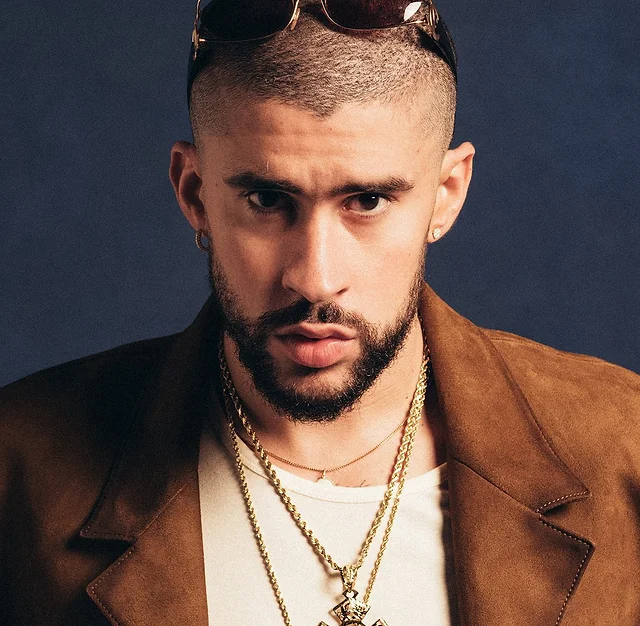
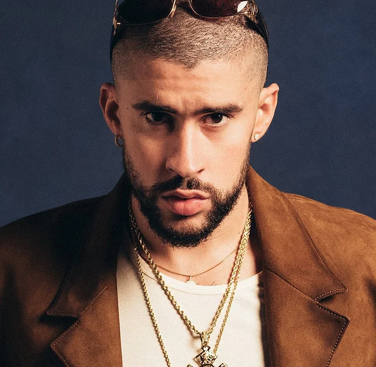

Hello! My name is Matheus
I am a 24-year-old MSc International Sport and Event Management student at KEDGE Business School.

Contact Information
- Email: matheustupi1999@gmail.com
- Phone: 06 51 18 32 70
- LinkedIn: Matheus Tupinamba Augusto de Brito
Experiences
My experiences have been a whirlwind of cultural immersion and professional growth. From my six-month high school exchange program in Canada, where I soaked in the beauty of its landscapes and embraced its diverse culture, to my four-year journey at a university in the US, where I not only pursued academic excellence but also delved into the world of hospitality as a Student Caterer assistant. Later, my role as a Student Resident Assistant honed my leadership skills and taught me the value of community. Now, as I embark on my master's journey at KEDGe Business School in Marseille, I am eagerly seeking an internship in the sports industry, fueled by my passion for the intersection of business and athletics. Each step has shaped me into the adaptable, driven individual I am today, ready to tackle new challenges with enthusiasm and determination.
Interests
My interests span a diverse spectrum that keeps my heart racing and my spirits high. Football holds a special place in my soul, with Cruzeiro Esporte Clube capturing my unwavering devotion. The thrill of Formula One racing never fails to captivate me, as I find myself drawn to the intricate strategies and adrenaline-fueled action of the sport. When it's time to unwind, music beckons, especially the infectious rhythms of Latin music, with Bad Bunny reigning as my favorite artist, whose beats never fail to uplift my spirits and set the mood for any occasion. Each of these passions brings its own unique flavor to my life, keeping me engaged and inspired day in and day out.

 

Favorite Song
One of my favorite songs is "NO ME QUIERO CASAR" by my favorite artist Bad Bunny.